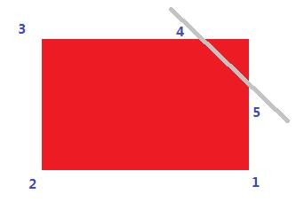

HDU4523. 威威猫系列故事——过生日
内存限制：500/200 MS (Java/Others)
时间限制：65535/32768 K (Java/Others)
题目描述
2月29号是威威猫的生日，由于这个日子非常特殊，4年才一次，所以生日这天许多朋友都前往威威猫家祝贺他的生日。
大家给威威猫买了一个非常大非常大的蛋糕，蛋糕的形状是一个有n条边的凸多边形，可是威威猫的审美观有一点奇怪，他只喜欢有m条边的蛋糕，所以他要伙伴们把这个蛋糕切p次，然后给他一个只有m条边的新蛋糕。这下大家急了，这不是坑爹吗，审美观崎岖作怪。
假设蛋糕可看成一个平面含n条边的凸多边形，每一刀必须沿直线切下去，p刀之后能给威威猫切出一个m条边的蛋糕吗？
输入格式
多组测试数据，每组占一行，包含3个整数n, m, p（含义如上）。
[Technical Specification]
3 <= n <= 10^100
0 < m <= 10^100
0 <= p <= 10^100
输出格式
每组测试数据，如果能够切出威威猫喜欢的蛋糕，请输出"YES"，否则请输出"NO"；
每组数据输出一行。
样例
样例输入
4 5 1
样例输出
YES
Hint
Sample对应的示意图如下：

数据范围与提示
2013腾讯编程马拉松初赛第四场（3月24日）